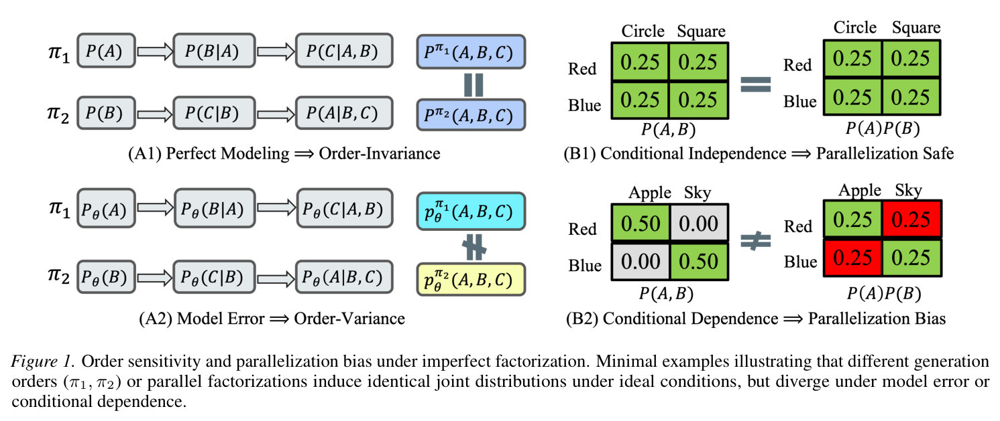
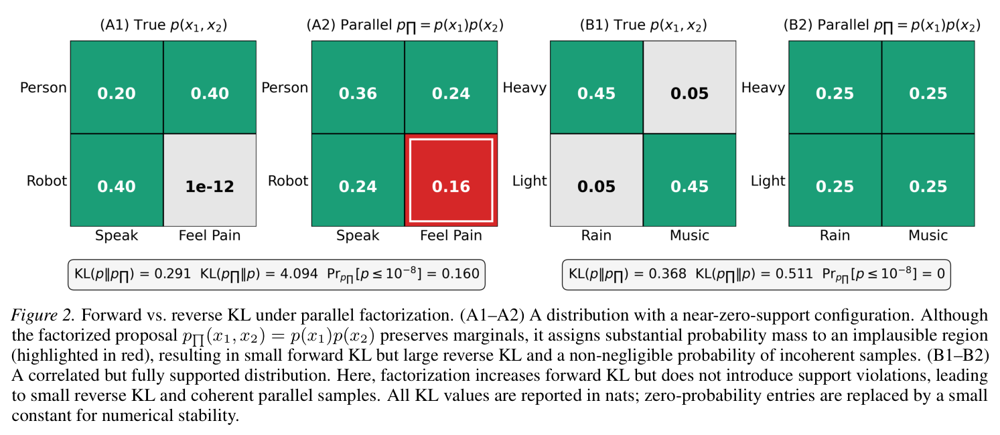
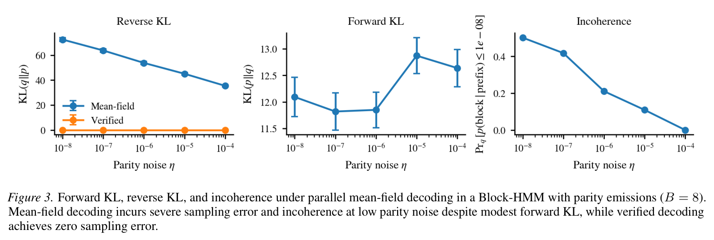
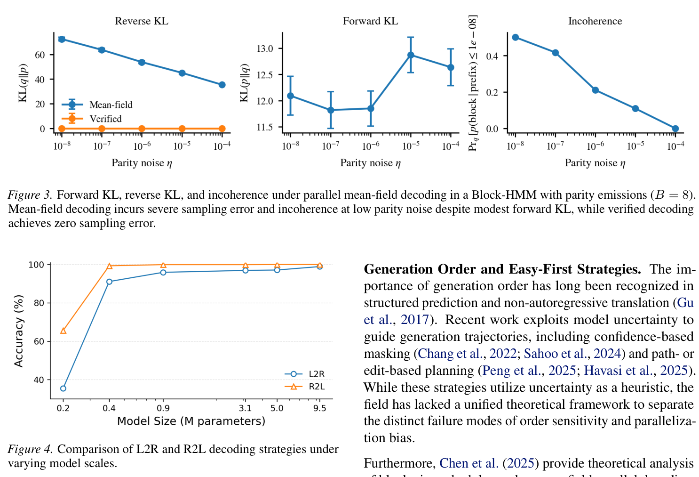
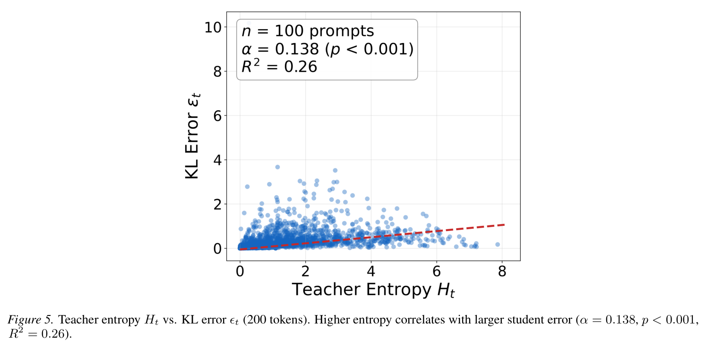

Generation Order and Parallel Decoding in Masked Diffusion Models
An Information-Theoretic Perspective
An Information-Theoretic Perspective
Masked Diffusion Models (MDMs) significantly accelerate inference by trading off sequential determinism. However, the theoretical mechanisms governing generation order and the risks inherent in parallelization remain under-explored.
We provide a unified information-theoretic framework to decouple and analyze two fundamental sources of failure: order sensitivity and parallelization bias.

Our analysis yields three key insights:




arXiv preprint, February 2026
@article{zhang2026generation,
title={Generation Order and Parallel Decoding in Masked Diffusion Models: An Information-Theoretic Perspective},
author={Zhang, Shaorong and Yu, Longxuan and Brekelmans, Rob and Tang, Luhan and Asif, Salman and Ver Steeg, Greg},
journal={arXiv preprint arXiv:2602.00286},
year={2026}
}